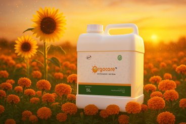

Orgocare™ is a bioactive plant metabolite concentrate formulated to stimulate crop metabolism and stress resilience. It is intended for foliar programs where physiological priming and recovery support are needed during key growth transitions.
Concentrated plant metabolite biostimulant for physiological priming and active metabolism.
Supports active metabolism, nutrient utilization, and crop resilience during stress-prone periods.
Suitable for repeated low-volume foliar support programs around growth transitions.
Designed for easy integration into foliar sprays, drip irrigation, or preventative stress management programs.
Concentrated plant metabolite biostimulant for physiological priming.
Supports active metabolism, nutrient utilization, and crop resilience.
Useful around growth transitions and stress-prone periods for steadier plant performance.
Suitable for repeated low-volume foliar support programs throughout the season.
| Application Stage | Dilution Rate | Dose per Acre | Application Method | Application Interval |
|---|---|---|---|---|
| Pre-flowering and fruit setting | 5 ml/L | 1 litre | Foliar spray during pre-flowering and fruit setting | 10-15days |
Apply at key crop stages: pre-flowering and fruit setting.
Source: Official product documentation.
Partner with Kriya to supply a proven stress mitigation biostimulant supported by robust documentation and technical expertise.